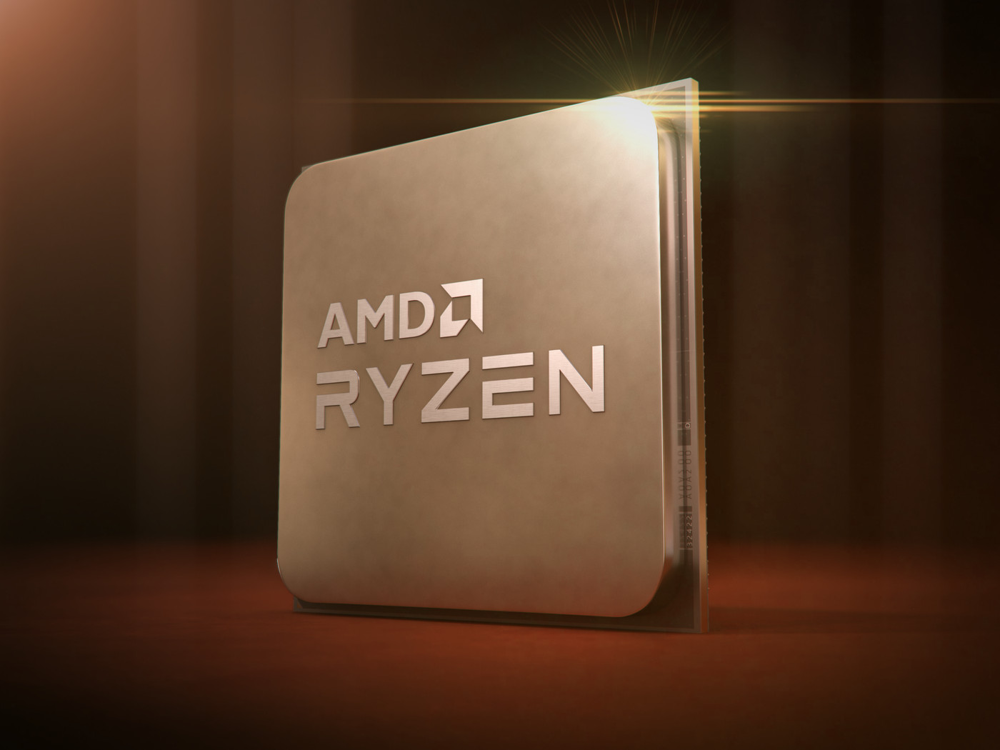

On this website, Aidan is once again trying to use CSS in tandem with HTML to further advance his programming knowledge.
| Ryzen 5th Gen | Intel 10th Gen |
|---|---|
| Ryzen 9 5950x | Intel Core i9 10900k |
| Ryzen 9 5900x | Intel Core i9 10850k |
| Ryzen 7 5800x | Intel Core i7 10700k |
| Ryzen 5 5600x | Intel Core i5 10600k |
| Extra Table Thing |
|---|
| This is me trying to get over 200 words by stealing from wikipedia. A central processing unit (CPU), also called a central processor, main processor or just processor, is the electronic circuitry within a computer that executes instructions that make up a computer program. The CPU performs basic arithmetic, logic, controlling, and input/output (I/O) operations specified by the instructions in the program. This contrasts with external components such as main memory and I/O circuitry,and specialized processors such as graphics processing units (GPUs). The computer industry used the term "central processing unit" as early as 1955. The form, design, and implementation of CPUs have changed over time, but their fundamental operation remains almost unchanged. Principal components of a CPU include the arithmetic logic unit (ALU) that performs arithmetic and logic operations, processor registers that supply operands to the ALU and store the results of ALU operations, and a control unit that orchestrates the fetching (from memory) and execution of instructions by directing the coordinated operations of the ALU, registers and other components. Most modern CPUs are implemented on integrated circuit (IC) microprocessors, with one or more CPUs on a single metal-oxide-semiconductor (MOS) IC chip. Microprocessors chips with multiple CPUs are multi-core processors. The individual physical CPUs, processor cores, can also be multithreaded to create additional virtual or logical CPUs. An IC that contains a CPU may also contain memory, peripheral interfaces, and other components of a computer; such integrated devices are variously called microcontrollers or systems on a chip (SoC). Array processors or vector processors have multiple processors that operate in parallel, with no unit considered central. Virtual CPUs are an abstraction of dynamical aggregated computational resources. |